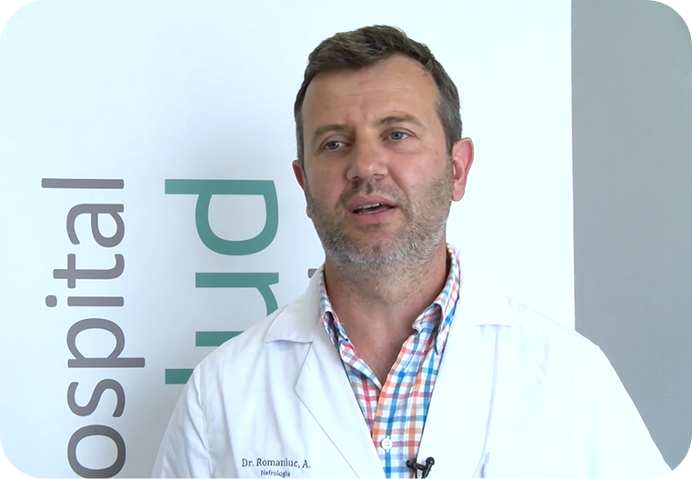

Especialista en Nefrología
Atención médica especializada en el cuidado de sus riñones. Más de una década de experiencia ofreciendo diagnósticos precisos y tratamientos personalizados con un enfoque humano y cercano.
Llame al 648 03 14 70. Para pedir cita por WhatsApp: 614 66 36 57.
Ofrecemos una amplia gama de servicios nefrológicos, utilizando las técnicas diagnósticas y terapéuticas más avanzadas.
Evaluación completa de la función renal, diagnóstico y seguimiento de enfermedades del riñón.
Valoración especializada de diagnósticos previos y opciones de tratamiento alternativas.
Procedimiento seguro y sin radiación para diagnóstico temprano de condiciones renales y monitoreo de tratamientos.
Seguimiento y optimización del tratamiento en pacientes en hemodiálisis.
Diagnóstico y control de la hipertensión arterial, especialmente la de origen renal.
Manejo integral de la enfermedad renal crónica en todas sus etapas, retrasando su progresión.
648 03 14 70
Solo para pedir cita: 614 66 36 57
C. Manuel García Matos, 6, 06004
Lun - Vie: 9:00 - 14:00 / 16:00 - 20:00
Llame al 648 03 14 70. Para pedir cita por WhatsApp: 614 66 36 57.